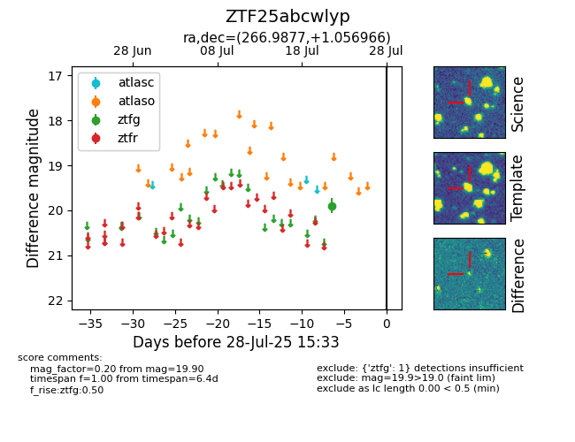

Target ZTF25abcwlyp at 2025-07-28 15:33, see:
FINK: fink-portal.org/ZTF25abcwlyp
Lasair: lasair-ztf.lsst.ac.uk/objects/ZTF25abcwlyp
ALeRCE: alerce.online/object/ZTF25abcwlyp
alt names
ZTF25abcwlyp (ztf,fink)
coordinates:
equatorial (ra, dec) = (266.9877,+1.05697)
galactic (l, b) = (26.5088,+14.58216)
photometry
last ztfg=19.90
1 ztfg detections
